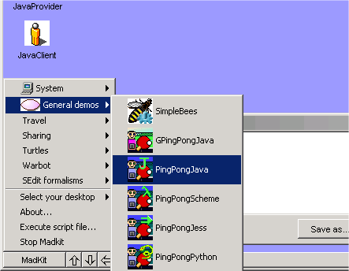
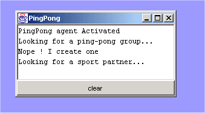
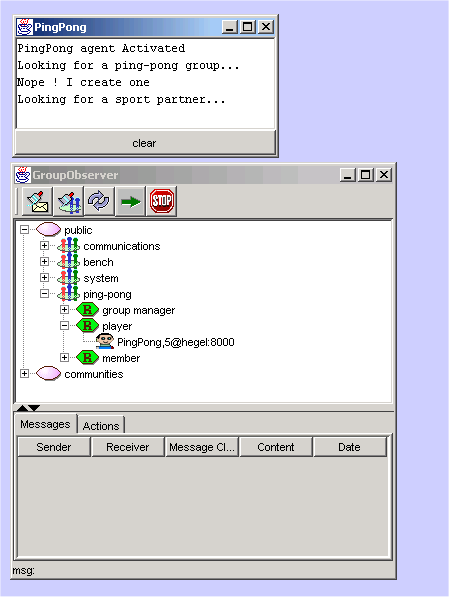
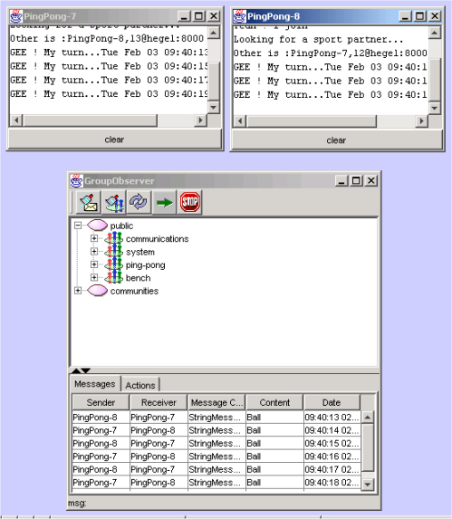
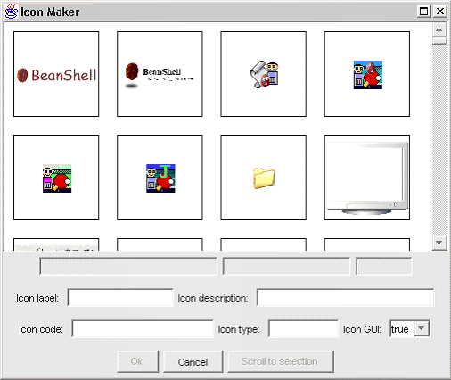

The MadKit Desktop environment
The Madkit Destkop environment or desktop for short, is the standard platform
GUI for execution and development of agents within MadKit and a good way to
start with MadKit. We will see in the
section about host containers that this is not the only execution environment
for MadKit (actually, you can design your owns as needed)
Note: the Desktop has been completely modified from version 3.1 to version
4.0.
Convention
When a menu item selection is being described, the menu is listed first, followed
by the menu item itself. The menu is separated from the menu item by greater-than
symbols (“>”). For example, Windows>add layer
refers to the add layer command contained in the Windows menu.
Starting the desktop
To start the desktop, double click on the file called desktop.bat or desktop.sh,
depending on your system, in the bin directory. If the installer set up an icon
on your Windows of KDE environment, double click on this icon.
Quick overview
Here is a snapshot of the main components of the desktop interface:
The main components of the desktop interfaces are:
-
The MadKit menus. This menu works as in many window based environment,
except that, in our case, standard applications are replaced by agents
which may be launched by clicking on the menu items. This menu contains
a set of pre-defined agents which may be launched with a single click.
It is possible to modify these toolbars at startup. See the section
configuring the MadKit menu to learn how to configure this menu. The
MadKit menu also contains a set of commands which are used to exit from
MadKit, execute script files and select the type of Desktop you like.
-
The destkop area. This is the "working sheet" where agents
are automatically placed when launched. This area contains the agents
window and icons which may be configure to
- The output pane. This is the place where messages are displayed.
This is a redirection of the main output stream (i.e. the output produced
by System.out.println(..) instructions are displayed in this
pane).
Some agents are very often used in conjunction with the desktop for launching
agents, exploring directories, observing organizations, tracing messages,
etc... Here is a brief description of these agents. Please refer to the
standard documentation of the system agents.
-
The OutputAgent: displays the text that
is printed globally with commands such as System.out.println(..).
-
The
MadKit explorer agent. Works as a standard
file explorer, but somes files (scripted files, SEdit files and Java agents)
which represent MadKit agents may be launched directly from this explorer.
The explorer displays the structure and content of directories. Double-clicking
on one of the icons will start the corresponding application. For instance,
clicking on .txt file will open the notepad or the corresponding editor,
if you have changed the association. Double clicking on agent icons will
launch the corresponding agent, whether it is written in Java or in any
scripting language. Java jar files containing agents are represented as
directories where leaves are the corresponding agents. See
Using
the MadKit explorer for a description of all possibilities of the
directory explorer.
-
The GroupObserver agent is used to observe
the structure of communities, groups and roles in MadKit. It is also possible
to trace diagrams within a group, and/or to observe all the organizational
events (creation of groups, agents that enter or leave groups, ..) that
take place in Madkit.
-
The NetAgent which is part of the MadKit
plugin, is used to connect a MadKit platform to other MadKit platforms
and constitute a MadKit network. See using MadKit as a distributed platform
for a description of the possibilities of the netcom plugin.
- The SpyAgent is used to observe the communications between agents
of the same community or of the same group.
- The EditorAgent may be used to edit a text or the script of an agent.
Launching and observing agents
To launch an agent you have several possibilities:
-
Click on one of the menu items of the MadKit main menu
-
Double click on one of the agents of the MadKit explorer. If the icons
represents a Java agent, then this classe is instantiated and the Java
agent launched. If this agent is represented as a script file, i.e.
as a .scm (Scheme agents), .py (Python agents), .clp (Jess agents),
.bsh (BeanShell agents), then a corresponding agent is launched (e.g.
if the file is a .scm file, then a SchemeAgent is launched) with this
script as argument.
-
Open one of the language editor used for scripted agents (i.e. PythonEditor
for Python scripts) and from this editor open a script and evaluate
it. See {{link}} to learn how to use the languages editors.
There are several tools to observe agents. One of the main tools is the GroupObserver{{link}},
an agent which shows the structure of groups, displays messages between agents,
and lists organizational events (playing a role, entering or leaving a group,
creating a group, etc.).
Tutorial: launching a simple agent from the editor
Start by clicking on the PingPong demo agent written in Java. The simplest
way is to click the menu item madkit>general demos>PingPong,
with icon
 .
.

Figure 2. Launching a PingPongJava agent
The PingPong agent creates a ping-pong group, requests and
obtains a player role, and then waits for another agent with
the same player role in the group to exchange a few messages
(seen as "balls") with it. You will get the following picture:

Figure 3. a PingPongJava agent launched
To kill an agent, just close its window, the desktop will request its
termination to the agent micro-kernel.
It is possible to view the general organization (i.e. groups, roles and
communities), messages and organizational events (i.e. creation of groups,
adhesion of an agent to a group, etc.) with a GroupObserver. This
tool is actually an agent which is able to display what happens in Madkit
from an organizational point of view. To launch the GroupObserver
click on the icon:

Figure 4. A GroupObserver with a PingPong agent
It is possible to see that the PingPong agent plays the role player
in the group ping-pong. One can notice also that there are already
several groups which are not part of the application. For instance, the
groups communications and system are parts of MadKit
and are used to manage the platform.
To actually see a trace of the messages sent by agents, click on the
show messages button of the Observer agent.
Launch another PingPong java by double clicking on the PingPong
agent menu item again. You will see that the two agents (here called
PingPong-7 and PingPong-8) starts communicating.
The GroupObserver {{link}} lists all messages that are transmitted
between these two agents.

Figure 5. Communication between agents seen by the observer
Scripted agents (i.e. agents whose behavior is written in a script language
such as Scheme, Jess, Python or BeanShell) may be launched in exactly
the same way as Java based agents. For instance, the following figure
shows two PingPong agents. The first one is a Java based agent (as before),
and the second one has been written in Python. {{to be finished}}
Note
When using Python for the first time, a Python initialization mechanism
checks the classpath and build a cachedir directory. This may
takes some time (from a few seconds to half a minute depending on your
system). Don't panic, your system is not frozen!!
The configuration of the desktop is described in a file called desktop.ini,
which is a XML file which containing information about toolbars and directories
to mount at boot time.
The desktop may be configured in several ways to change its appearance and
to add new menu items and icons.
There are three ways to add new classes of agents in a desktop: add a button
in the desktop, add a menu item in the madkit menu, open a configuration file
or double click on an agent icon in the Explorer.
The desktop.ini file is used to configure the desktop at launch
time. This is a XML file which contains (for the moment) only two type of
entries: toolbar description and directories to mount
Menu description
{{Note: This section does not correspond to
the new Desktop configuration. Look at the desktop.ini file...}}
A toolbar is a set of buttons which are used to launch agents. Each button
is described with the following entries:
<button name="name of button"
description="a string which describes the button"
icon="address of image"
type="type of agent"
code="class of Java agent or address of script code"
/>
|
The
type attribute refers to the type of agent.
-
If the value of the type attribute is Java then
the code attribute refers to the Java class name which
will be instantiated when the button is clicked.
-
If the value is different, then this is a script based agent, i.e.
an agent whose behavior has been written in a script language. For
the moment only the following values are recognized: Scheme,
Jess, Pyton, BeanShell. More will be
added in the future. In this case, the code attribute,
refers to the address of the file.
Here is the definition of the "Pingpong" toolbar from desktop.ini.
<toolbar name="Pingpong">
<button name="PingPongJava"
description="the PingPong demo agent in Java"
icon="images/agents/agentpingpongJava32.gif"
type="Java"
code="agents.PingPong" />
<button name="PingPongScheme"
description="the PingPong demo agent in Scheme"
icon="images/agents/agentpingpongScheme32.gif"
type="Scheme"
code="autoload/scripts/schemefiles/PingPong.scm" />
<button name="PingPongJess"
description="the PingPong demo agent in Jess"
icon="images/agents/agentpingpongJess32.gif"
type="Jess"
code="autoload/scripts/jessfiles/madkit standard/PingPong.clp" />
<button name="PingPongPython"
description="the PingPong demo agent in Python"
icon="images/agents/agentpingpongPython32.gif"
type="Python"
code="autoload/scripts/pythonfiles/PingPong.py" />
<button name="PingPongBeanShell"
description="the PingPong demo agent in BeanShell"
icon="images/agents/agentpingpongBeanShell32.gif"
type="BeanShell"
code="autoload/scripts/beanshellfiles/PingPong.bsh" />
</toolbar>
|
Configuration files
A configuration file has the extension .cfg and contains a set
of actions that have to be done when the configuration file is loaded.
For the moment, the only recognized action is the launch-agent
action wich has the following form:
<launch-agent name="agent name"
type="type of agent"
code="Java class name or script file address depending on the type"
gui="true"
/>
|
The type attribute refers to the type of agent.
-
If the value of the type attribute is Java then
the code attribute refers to the Java class name which
will be instantiated to make the agent.
-
If the value is different, then this is a script based agent, i.e.
an agent whose behavior has been written in a script language. For
the moment only the following values are recognized: Scheme,
Jess, Pyton, BeanShell. More will be
added in the future. In this case, the code attribute,
refers to the address of the script file.
The gui attribute is a flag which says if the agent must be
launched with its GUI interface or not. By default the flag is true.
Here is the definition of the testconfig.cfg configuration file.
You may notice that some agents are launched with their GUI interface
and some are not.
<?xml version="1.0" encoding="UTF-8"?>
<config>
<launch-agent name="pong-java" type="Java" code="agents.PingPong"/>
<launch-agent name="provider-1" type="Java" code="agents.marketorg.Provider"/>
<launch-agent name="provider-2" type="Java" code="agents.marketorg.Provider"/>
<launch-agent name="provider-3" type="Java" code="agents.marketorg.Provider"/>
<launch-agent name="provider-4" type="Java" code="agents.marketorg.Provider"/>
<launch-agent name="provider-5" type="Java" code="agents.marketorg.Provider"/>
<launch-agent name="provider-6" type="Java" code="agents.marketorg.Provider" gui="false"/>
<launch-agent name="provider-7" type="Java" code="agents.marketorg.Provider" gui="false"/>
<launch-agent name="provider-8" type="Java" code="agents.marketorg.Provider" gui="false"/>
<launch-agent name="provider-9" type="Java" code="agents.marketorg.Provider" gui="false"/>
</config>
|
Creating new Icons
To create a desktop icon, right click on the background and
select the popup menu item add icon. Then the following dialog appears:

Figure xx: the Icon maker dialog to create new Icons on
the desktop
Choose an image among all the resources (this dialog shows
all the images that are available in all the jars of madkit). Then fill
the fields and validate. Here is the meaning of the fields:
- Icon label corresponds to the name displayed under the icon
- Icon description is the tooltip text which will be displayed when the mouse
goes over the icon.
- Icon type must be filled by one of the following items: Java, BeanShell,
Scheme, Jess, Python. The default value is Java. This corresponds to the language
category of the agent.
- Icon code is the name of the full Java class (when the agent is a Java agent)
or of the file (if the agent is a scripted agent).
To modify an icon, right click on the icon and choose the menu item Icon
property, modify the fields and validate the modifications with the OK button.
To delete an icon, right click on the icon and choose the menu item Delete
icon.
Launch mode
{{this has been changed with the new Desktop...}}
When an agent is activated, the desktop will launch a new internal frame
in the agent desktop to enclose its graphical interface (whether it is a
custom GUI or a simple text panel automatically created).
You can easily change this behavior with the Launch mode menu. You
can choose between 2 options:
-
Launch as internal frame. The default behavior, the agent
is launched in an internal frame on the current agent desktop. You
can add or remove new agent desktops with the Windows>add
Layer command.
-
Launch as external window. The agent is launched in an external
native window.
Note
When an agent use a heavyweight AWT component (i.e. native platform components),
the desktop will launch the agent as an external window, because heavyweight
components do not mix well with Swing lightweight components. Please see
the Java documentation for more information.
By default, the desktop will remove the graphical interface of agent when
an agent is killed. You can modify this behavior, and leave the graphical
interface of agents after the death of agents by unchecking th Dispose
GUI at deactivation item in the View menu.
Note that closing manually an agent interface (by hitting the close box)
will dispose the agent GUI and kill
the agent, thus removing it from the MadKit kernel.
3.7. Using jEdit with MadKit
jEdit is powerful text editor which is provided free with a GPL Licence.
One of the key feature of jEdit is the facility to add plugins and supplement
jEdit with new features.
jEdit has been integrated into MadKit in order to bring the power of a complete
editor. With jEdit, it is possible to edit a script of an agent, launch a
scripted agent, evaluate Scheme expressions. In the future, more facilities
will be added, like developping Java agents without requiring to stop and
rerun MadKit.
3.7.1. Basic commands with jEdit
To launch jEdit, click on the jEdit button:

Caution
For the moment, you cannot quit jEdit without leaving MadKit too. Thus
once jEdit is launched, you cannot 'delete' jEdit. This is due to some
initialization problems. This problem will be solved in a future version
of MadKit.
{{to be finished}}